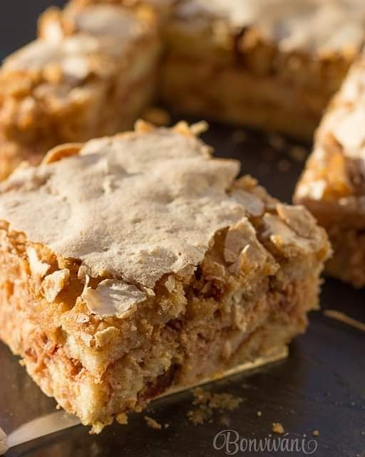

Táto orechová žemľovka vôbec nie je len taká obyčajná žemľovka. Je to "pani" žemľovka! :)
Pripomína šťavnatý orechový koláč s jablkami prevoňaný škoricou a s chrumkavou kôrkou na povrchu. Už sa len zahryznúť :) https://bonvivani.sk/recepty/orechova-zemlovka
#zemlovka #orechy #jablka #kolace #mucniky #retrorecepty